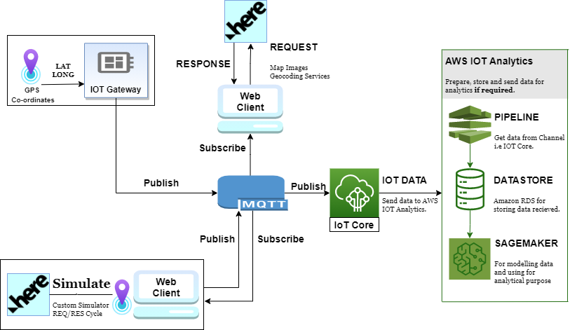

Abstract
Internet of Things (IoT) is a network of devices integrating physical and digital worlds together. This
study mainly focusses on practical opportunities emerging from Internet of Things (IoT) and its applications to
optimize supply chain and logistics tasks introducing transparency and automated networks for the same. This
project aims at building a custom simulator to better visualize location data, have a control over randomly
generated data and build an automated network including several participants in supply chain with the help of
several API and cloud-based services. Starting from simple location services tracking plays an important role in
overall development of supply chain. It is understood that the IoT infrastructure layer operates by gathering
information and communicating it to track the position. Users can select different participants to post and use data
and have full access to the interface so they can keep an update about their order. Later if required a pipeline can
be created to store data using Amazon Relation Database Service (RDS) and also can be used later as reference for
processing and analytics with help of AWS SageMaker. Complex algorithms are in place today which help in taking
IoT applications in different supply chains. This paper focuses on building small a solution based on conceptual
understanding of IoT, protocols Like MQTT and domain as Supply chain replicating a custom supply chain scenario
having specific requirements.
